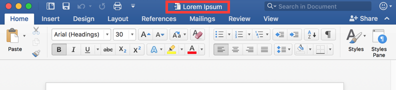
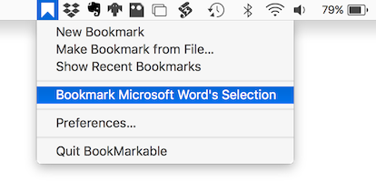
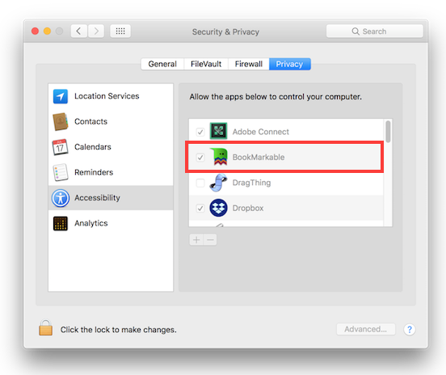
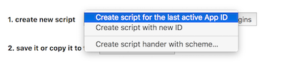

BookMarkable Plugins
Download Sample Plugins Most applications are document-based, which is usually indicated by small file icon in window’s title.

These are documents BookMarkable can reference directly with used of the default plugin (Default.scpt). Other application, such as Outlook or Safari require application specific plugin to convert selected record or front-most window into a bookmark. These plugins go into BookMarkable “Scripts” folder. The easiest way to get started, is to download sample plugins and copy the ones you want to use in.
Where do I find the Scripts folder
The scripts folder is under your home folder Library/Application Scripts/com.onflapp.BookMarkable
1 switch to Finder
2 select menu Go, then Go to Folder
3 type in ~/Library/Application Scripts/com.onflapp.BookMarkable
If this folder doesn’t exist already, create it.
How do I use plugins

Switch to the window of application you want to bookmark. Use ‘Bookmark **** Selection’ menu to invoke the plugin. This is either going to be application specific plugin, if exists, or default plugin otherwise.
What if it doesn’t work
Many plugins require ‘application to control your computer’ permission to access application’s state. This permission can be granted by going to System Preferences > Security & Privacy

How to make my own plugin
First of all, you should not be afraid of writing AppleScript scripts. The best way to get started is to go to Preferences > Plugins > Install Plugins . Switch to the app you want to create plugin for, switch back to BookMarkable and choose Create script for the last active App ID.

Edit the script to extract application’s file (as alias) or URL link and pass it to the BookMarkable. This is very application specific. Many applications are actually not AppleScript scriptable at all so you might have to get creative. Save the script to ~/Library/Application Scripts/com.onflapp.BookMarkable .
What’s up with the schemes?
Some applications, such as Outlook, do not have any useful URL or file to reference. Schemes plugins allow you to create new schemes. Take a look at the com.microsoft.Outlook.scpt which creates outlook-message://messageid URL and open_outlook-message.scpt which handles it. You can also override regular scheme e.g. open_file.scpt allows files to be opened via Finder rather than BookMarkable to bypass its security limitations.